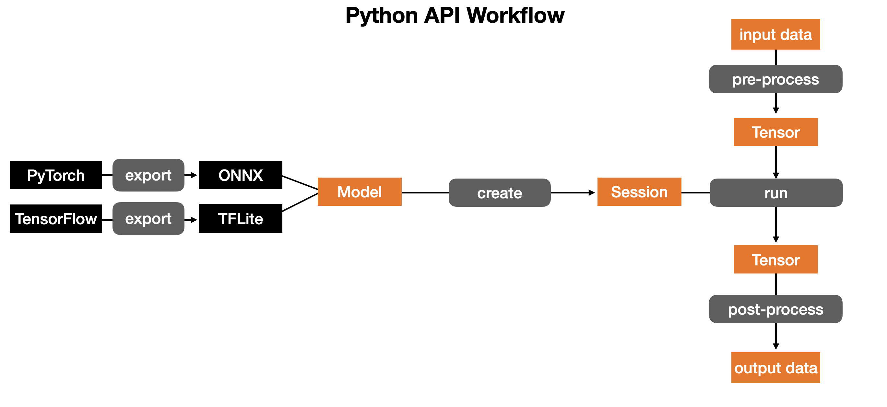
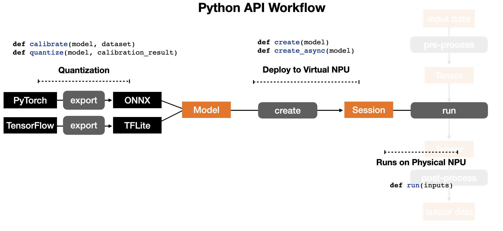
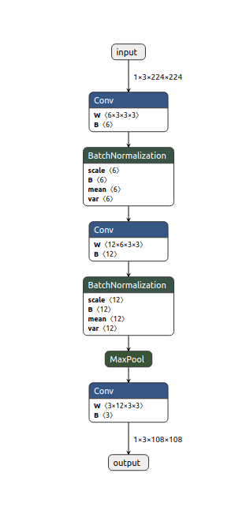
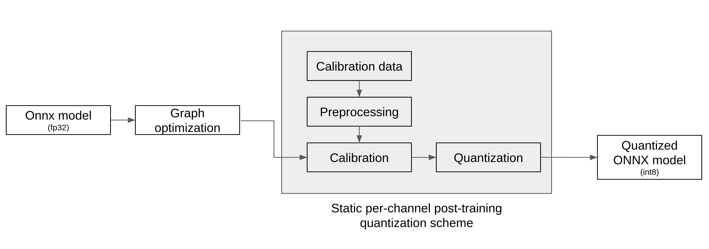
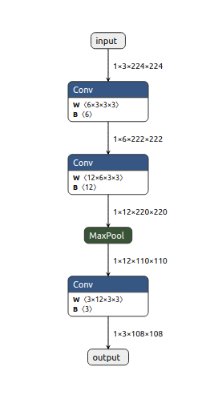
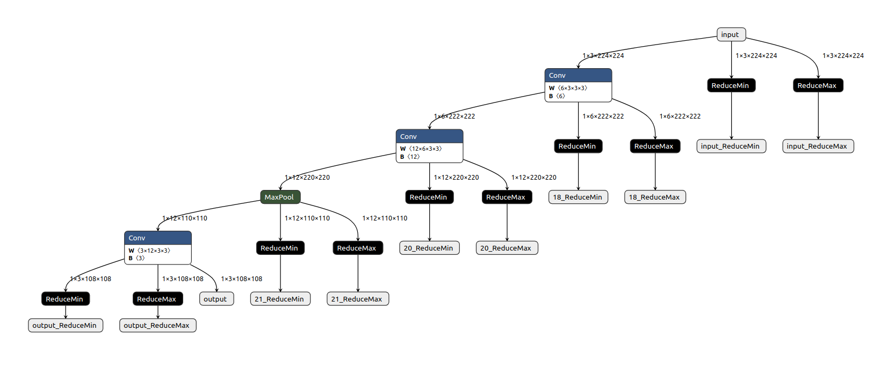
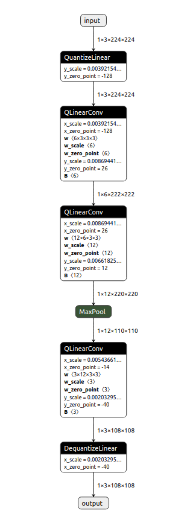

소개
FuriosaAI NPU (Neural Processing Unit)는 C/C++ 및 Python API 를 통해 DNN 모델 추론을 수행할 수 있습니다.
이 문서에서는 FuriosaAI NPU FPGA 버젼을 설치하는 방법, Jupyter Notebook 예제로 FPGA를 실행하는 법, 컴파일러 CLI 사용하는 방법을 담고 있습니다.
또한 양자화 (quantization)을 도와주는 Nux Quantizer 도구와 Python 및 C/C++ API 를 소개합니다.
필요사항
- Linux (Ubuntu 18.04 혹은 상위 버젼)
FuriosaAI SDK 설치
FPGA 설치
아래 링크로 FuriosaAI 에서 제공하는 FPGA 혹은 AWS F1을 설치해서 사용할 수 있습니다.
Jupyter Notebook 예제 실행
아래 링크로 Jupyter Notebook 으로 미리 작성된 예제를 실행해볼 수 있습니다. 이를 통해 모델이 어떻게 컴파일 되어 FuriosaAI NPU 에서 추론이 수행될 수 있는지 확인할 수 있습니다.
FuriosaAI Jupyter Notebook Examples
FuriosaAI CLI 사용
아래 링크로 Compiler CLI (Command Line Interface)를 사용할 수 있습니다.
바로 시작하기
 Renegade Python API 를 사용하는 workflow 는 위와 같습니다.
 Renegade NPU 에서 모델을 실행시키기 위해 하는 작업은 위와 같이 3단계로 이루어집니다.
- TensorFlow 나 PyTorch 모델을 사용한다면 Renegade compiler 가 받아들일 수 있는 형태인 TFLite 나 ONNX 모델로 Quantization 하기
- TFLite 나 ONNX 모델을 컴파일 해서 가상 NPU 에 올리기
- 물리적 NPU 실행시키기
Nux Quantizer
양자화 도구 nux-quantizer 는 post-training 8-bit quantization (이하 양자화)을 지원합니다.
nux-quantizer 의 quantization specification 은 Tensorflow Lite 8-bit quantization specification을 따릅니다.
nux-quantizer 는 ONNX 모델을 우선 지원하며, 추후 SDK 릴리즈 계획에 따라 TensorFlow 모델을 지원할 예정입니다.
양자화 바로 시작하기
nux.quantizer.post_training_quantization()
One click quantization
import nux
model = ...
input_tensors = ...
calibration_data = ...
quantized_model = nux.quantizer.post_training_quantization(model, input_tensors, calibration_data)
with nux.session.create(quantized_model) as sess:
# ...
입력 ONNX 모델을 바로 양자화 할 수 있습니다. 이 함수는 다음의 양자화 기법이 기본으로 적용되어 있습니다.
- 양자화로 인하여 모델의 정확도가 하락하는 것을 최소화하기 위하여
convolution오퍼레이터는per-channel단위로, 나머지 오퍼레이터들은per-tensor단위로 양자화 합니다. - 양자화된 모델 추론 시 부동소수점 연산에 비하여 연산 처리 속도가 빠른 integer-only-arithmetic을 적용하기 위하여 가중치 (weight) 뿐만 아니라 활성화 값 (activation value)도 양자화하는
static양자화 기법을 사용합니다.
Parameters
| 이름 | 설명 |
|---|---|
| model | onnx.ModelProto ONNX 형식의 신경망 모델(이하 ONNX 모델) |
| input_tensors | List[str] ONNX 모델의 입력 텐서 이름 |
| calibration_data | Union[Dict[str, np.ndarray], List[Dict[str, np.ndarray]]] 활성화 값의 동적 범위 (dynamic range)를 수집하기 위하여 필요한 캘리브레이션 데이터, 만약 주어지지 않으면 랜덤하게 데이터 생성 |
Return
onnx.ModelProto 정적 채널 단위 (static per-channel)로 int8 양자화된 모델
Pytorch 모델 ONNX 변환 예제
nux.quantizer.post_training_quantization 함수가 동작하기 위하여는 ONNX 모델이 주어져야 합니다.
Pytorch 로 작성된 모델은 torch.onnx.export 함수를 사용하여 ONNX 로 변환 할 수 있습니다.
예제 코드는 python script 로 작성된 Pytorch 모델 ExampleNet을 ONNX 모델로 변환 하고, 랜덤하게 생성한 캘리브레이션 데이터로부터 활성화 값의 동적 범위를 수집하고 양자화를 수행합니다.
Export Pytorch to ONNX
import io
import torch
import torch.nn as nn
import torch.nn.functional as F
import onnx
import numpy as np
import nux
# describe Example Pytorch model
class ExampleNet(nn.Module):
def __init__(self):
super(ExampleNet, self).__init__()
self.conv1 = nn.Conv2d(3, 6, 3)
self.bn1 = nn.BatchNorm2d(6)
self.conv2 = nn.Conv2d(6, 12, 3)
self.bn2 = nn.BatchNorm2d(12)
self.conv3 = nn.Conv2d(12, 3, 3)
def forward(self, x):
x = self.conv1(x)
x = self.bn1(x)
x = self.conv2(x)
x = self.bn2(x)
x = F.max_pool2d(x, 2)
x = self.conv3(x)
return x
# util function for exporting Pytorch model to ONNX
def export_example_net():
dummy_input = torch.randn(1, 3, 224, 224)
input_names = ["input"]
output_names = ["output"]
model_io = io.BytesIO()
torch.onnx.export(ExampleNet(),
(dummy_input,),
model_io,
verbose=False,
input_names=input_names,
output_names=output_names)
model_io.seek(0)
return onnx.load_model(model_io)
# util function to get input tensor name
def example_net_input_tensors():
return ["input"]
model = export_example_net()
quantized_model = nux.quantizer.post_training_quantization(model, example_net_input_tensors())
with nux.session.create(quantized_model) as sess:
# ...
변환된 ExampleNetONNX 모델(이하 ExampleNet)을 Netron으로 아래와 같이 ONNX 변환 결과를 시각화할 수 있습니다.

Nux Quantizer 들여다 보기
Nux Quantizer in detail
import nux
IS_TEST = ...
input_tensors = example_net_input_tensors()
model = export_example_net()
# graph optimization
optimized_model = nux.quantizer.optimize(model)
# calibration
calibration_model = nux.quantizer.build_calibration_model(optimized_model, input_tensors)
if IS_TSET:
dynamic_ranges = nux.quantizer.calibrate_with_random_input(calibration_model)
else:
calibration_data = get_calibration_data(...)
dynamic_ranges = nux.quantizer.calibrate(calibration_model, calibration_data)
# quantization
quantized_model = nux.quantizer.quantize(optimized_model, input_tensors, dynamic_ranges)
with nux.session.create(quantized_model) as sess:
# ...
nux-quantizer는 아래 도표의 흐름으로 양자화 합니다.
ONNX 모델을 입력으로 받아서 graph optimization -> calibration -> quantization 세 단계를 거쳐 양자화된 ONNX 모델을 출력합니다.

그래프 최적화
Graph Optimization
import nux
model = ...
optimized_model = nux.quantizer.optimize(model)
nux.quantizer.optimize()
이 함수는 캘리브레이션 및 양자화를 수행하기 전 단계로 ONNX 모델을 최적화 합니다.
각 노드의 출력 텐서 모양 (shape) 추론, 오퍼레이터 퓨전 (fusion) 등을 수행하여 ONNX 모델 그래프를 최적화합니다.
Parameters
| 이름 | 설명 |
|---|---|
| model | onnx.ModelProto ONNX 모델 |
Return
onnx.ModelProto 최적화된 ONNX 모델
Result
아래와 같이 optimized ExampleNet 을 시각화하여 아래와 같이 ONNX 모델 최적화 결과를 확인할 수 있습니다.

캘리브레이션
nux.quantizer.build_calibration_model()
Calibration
import nux
IS_TEST = ...
optimized_model = ...
input_tensors = ...
calibration_model = nux.quantizer.build_calibration_model(optimized_model, input_tensors)
if not IS_TSET:
calibration_data = get_calibration_data(...) # user-written function
dynamic_ranges = nux.quantizer.calibrate(calibration_model, calibration_data)
else:
dynamic_ranges = nux.quantizer.calibrate_with_random_input(calibration_model)
이 함수는 ONNX 모델을 static 양자화하기 위한 사전 준비단계로 각 노드의 출력에 ReduceMin과 ReduceMax 노드를 덧붙입니다.
이로써 주어진 캘리브레이션 데이터로부터 활성화 값들의 동적 범위 (dynamic range)를 캘리브레이션 하기 위한 모델을 만들어 냅니다.
Parameters
| 이름 | 설명 |
|---|---|
| model | onnx.ModelProto ONNX 모델 |
| input_tensors | List[str] ONNX 모델의 입력 텐서 이름 |
Return
onnx.ModelProto 캘리브레이션 모델
Result
아래와 같이 calibration ExampleNet을 시각화하여 아래와 같이 캘리브레이션 모델을 확인할 수 있습니다.

nux.quantizer.calibrate()
이 함수는 캘리브레이션 모델을 실행하여 전처리된 캘리브레이션 데이터로부터 활성화 값들의 동적 범위를 수집하는 일을 수행합니다.
Parameters
| 이름 | 설명 |
|---|---|
| model | onnx.ModelProto ONNX 모델 |
| calibration_data | Union[Dict[str, np.ndarray], List[Dict[str, np.ndarray]]] 전처리된 calibration 데이터 |
Return
Dict[str, Tuple[float, float]] 활성화 값들의 동적 범위
Result
calibration ExampleNet을 캘리브레이션하면 아래와 같이 동적 범위를 확인 할 수 있습니다.
text
{'input': (1.2729454283544328e-05, 0.9999984502792358), '18': (-0.811184287071228, 1.0816885232925415), '20': (-0.6744376420974731, 0.5646329522132874), '21': (-0.29423975944519043, 0.5646329522132874), 'output': (-0.24178576469421387, 0.20031100511550903)}
nux.quantizer.calibrate_with_random_input()
이 함수는 캘리브레이션 모델을 실행하여 랜덤하게 생성된 캘리브레이션 데이터로부터 활성화 값들의 동적 범위를 수집합니다.
Parameters
| 이름 | 설명 |
|---|---|
| model | onnx.ModelProto ONNX 모델 |
Return
Dict[str, Tuple[float, float]] 활성화 값들의 동적 범위
Result
calibration ExampleNet을 랜덤하게 캘리브레이션 하면 아래와 같이 동적 범위를 확인 할 수 있습니다.
text
{'input': (2.170155084968428e-06, 0.9999873042106628), '18': (-1.1680195331573486, 1.125024437904358), '20': (-0.6748880743980408, 0.6123914122581482), '21': (-0.44649842381477356, 0.6123914122581482), 'output': (-0.2456839233636856, 0.39172685146331787)}
양자화
nux.quantizer.quantize()
Quantization
import nux
optimized_model = ...
input_tensors = ...
dynamic_ranges = ...
quantized_model = nux.quantizer.quantize(optimized_model, input_tensors, dynamic_ranges)
이 함수는 그래프 최적화 단계에서 얻은 최적화 ONNX 모델, 캘리브레이션 단계에서 얻은 동적 범위를 활용하여 ONNX 모델을 양자화하는 일을 수행합니다.
Parameters
| 이름 | 설명 |
|---|---|
| model | onnx.ModelProto ONNX 모델 |
| input_tensors | List[str] ONNX 모델의 입력 텐서 이름 |
| dynamic_ranges | Dict[str, Tuple[float, float]] 활성화 값들의 동적 범위 |
Return
onnx.ModelProto static per-channel 8-bit 양자화 모델
Result
quantized ExampleNet을 시각화하여 아래와 같이 양자화된 ONNX 모델을 확인할 수 있습니다.

Nux Python API
Python API 문서는 아래 링크에서 확인 가능합니다.
Nux C/C++ API
create_nux()
Create a Nux handle
#include "nux.h"
nux_handle_t nux;
nux_error_t err = create_nux(&nux);
Nux 를 활용하기 위해 핸들을 생성합니다.
Parameters
| 이름 | 설명 |
|---|---|
| nux | 생성한 nux 핸들을 저장하기 위한 변경시킬 수 있는 포인터 |
Return
성공 하면 nux_error_t_success 를 실패하면 nux_error_t_nux_creation_failed 를 돌려 줍니다.
destroy_nux()
Destroy a Nux handle
#include "nux.h"
destroy_nux(nux);
Nux 핸들을 해제합니다.
Parameters
| 이름 | 설명 |
|---|---|
| nux | 해제할 nux 핸들 (널 포인터가 아니어야 함) |
nux_create_sync_model()
Create a synchronous model
#include "nux.h"
nux_sync_model_t sync_model;
nux_error_t err = nux_create_sync_model(nux,
(unsigned char*)buffer,
model_size,
&sync_model);
컴파일된 ENF 바이너리를 실행할 수 있는 동기식 모델을 생성합니다. 동기식 모델은 한번에 하나의 배치를 완전하게 수행하는 추론 태스크를 실행하는 API 를 제공합니다.
Parameters
| 이름 | 설명 |
|---|---|
| nux | Nux 핸들을 가리키는 변경 가능 포인터 |
| buffer | ENF 바이너리를 저장하는 바이트 버퍼 (즉, 추론 태스크를 위한 모델) |
| model_size | buffer 바이트 길이 |
| sync_model[out] | 생성된 동기식 모델을 가리킬 변경 가능 포인터 |
파이썬에 해당 API 는 위와 같은 인자를 필요로 하지 않습니다. 대신 enf 파일의 경로를 직접 받습니다.
Return
성공 시에 nux_error_t_success, 실패 시에 nux_error_t_nux_creation_failed
destroy_sync_model()
Destroy a synchronous model
#include "nux.h"
destroy_sync_model(sync_model);
더이상 사용하지 않을 동기식 모델의 핸들을 해제합니다.
Parameters
| 이름 | 설명 |
|---|---|
| sync_model | 해제할 동기식 모델 (널 포인터가 아니어야 함) |
model_count_inputs()
Get the number of input tensors
#include "nux.h"
nux_sync_model_t sync_model;
...
int nInputs = model_count_inputs(sync_model);
from nux import model
with model.load_tflite('../model.enf') as model:
nInputs = model.input_num()
동기식 모델의 입력 텐서들의 개수를 돌려줍니다.
Parameters
| 이름 | 설명 |
|---|---|
| sync_model | 동기식 모델의 핸들 |
Return
모델의 입력 텐서 개수
model_count_outputs()
Get the number of output tensors
#include "nux.h"
nux_sync_model_t sync_model;
...
int nOutputs = model_count_outputs(sync_model);
동기식 모델의 출력 텐서들의 개수를 돌려줍니다.
Parameters
| 이름 | 설명 |
|---|---|
| sync_model | 동기식 모델의 핸들 |
Return
모델의 출력 텐서 개수
model_input_tensor()
Get an input tensor handle for a synchronous model
#include "nux.h"
nux_sync_model_t sync_model;
nux_tensor_t tensor;
int index;
...
nux_error_t err = model_input_tensor(sync_model, index, &tensor);
특정 입력 텐서를 위한 핸들을 얻습니다.
Parameters
| 이름 | 설명 |
|---|---|
| sync_model | 동기식 모델의 핸들 |
| index | 입력 텐서 인덱스 |
| tensor[out] | 특정 입력 텐서 핸들을 가리킬 변경 가능 포인터 |
Return
성공 시에 nux_error_t_success, 실패 시에 nux_error_t_invalid_input_index
model_output_tensor()
Get an output tensor handle for a synchronous model
#include "nux.h"
nux_sync_model_t sync_model;
nux_tensor_t tensor;
int index;
...
nux_error_t err = model_output_tensor(sync_model, index, &tensor);
특정 출력 텐서를 위한 핸들을 얻습니다.
Parameters
| 이름 | 설명 |
|---|---|
| sync_model | 동기식 모델의 핸들 |
| index | 출력 텐서 인덱스 |
| tensor[out] | 특정 출력 텐서 핸들을 가리킬 변경 가능 포인터 |
Return
성공 시에 nux_error_t_success, 실패 시에 nux_error_t_invalid_output_index
model_run()
Execute a synchronous model
#include "nux.h"
nux_sync_model_t sync_model;
...
nux_error_t err = model_run(sync_model);
한번의 추론 태스크를 수행합니다.
이 함수를 호출하기 전에 입력 텐서들을 적합한 데이터로 채워줘야 합니다.
이를 위해 model_input_tensor 및 tensor_set_buffer 를 참조하시기 바랍니다.
Parameters
| 이름 | 설명 |
|---|---|
| sync_model | 동기식 모델의 핸들 |
Return
성공 시에 nux_error_t_success, 실패 시에 nux_error_t_model_execution_failed
tensor_set_buffer()
Copy data to an input tensor
#include "nux.h"
nux_tensor_t inputTensor;
void* buffer;
int buf_size;
...
nux_error_t err = tensor_set_buffer(inputTensor, buffer, buf_size);
특정 입력 텐서에 데이터를 복사합니다.
함수 model_run 을 호출하기 전에 필요한 데이터를 채워줘야 합니다.
Parameters
| 이름 | 설명 |
|---|---|
| inputTensor | 데이터를 복사할 입력 텐서 핸들 |
| buffer | 복사할 데이터를 저장하고 있는 버퍼 |
| buf_size | buffer 바이트 길이 |
Return
성공 시에 nux_error_t_success, 만약 buffer 가 유효하지 않으면 nux_error_t_invalid_buffer
tensor_get_buffer()
Copy data from an output tensor
#include "nux.h"
nux_tensor_t outputTensor;
...
nux_buffer_t buffer;
nux_buffer_len_t buf_size;
nux_error_t err = tensor_get_buffer(outputTensor, &buffer, &buf_size);
출력 텐서의 데이터 버퍼를 가리키는 포인터를 얻습니다.
model_run 함수가 호출되고 나면 추론 결과가 출력 텐서들에 쓰여집니다.
이 함수는 특정 텐서의 데이터 버퍼를 가리키는 포인터를 돌려줍니다.
Parameters
| 이름 | 설명 |
|---|---|
| outputTensor | 데이터 버퍼의 포인터를 얻을 출력 텐서 |
| buffer | 출력 텐서의 데이터 버퍼를 가리킬 변경 가능 포인터 |
| buf_size[out] | buffer 바이트 길이 |
Return
성공 시에 nux_error_t_success
nux_create_task_model()
Create a task model
#include "nux.h"
void *buffer;
int max_batch;
int model_size;
nux_handle_t nux;
nux_task_model_t task_model;
nux_error_t err = nux_create_task_model(nux,
(unsigned char*)buffer,
model_size,
max_batch,
output_callback,
error_callback,
finish_callback,
&task_model);
The signatures of the above callback functions should be:
void output_cb(nux_request_id_t id,
nux_output_index_t out_id,
nux_buffer_t buf,
nux_buffer_len_t buf_len) {
// fill your logic
}
void my_error_cb(nux_request_id_t id, nux_error_t err) {
// fill your logic
}
void my_finish_cb(nux_request_id_t id) {
// fill your logic
}
태스크 모델 인스턴스를 생성합니다.
사용자는 이 함수를 이용해서 여러 추론 태스크들을 동시에 비동기적으로 실행할 수 있습니다.
각각의 태스크 수행이 완료되거나 실패했을 때 해당하는 콜백 함수를 호출합니다. 이때 태스크 리퀘스트 할 때 사용한 nux_request_id_t 를 사용해서 콜백 함수를 호출합니다. 자세한 내용은 task_execute() 를 참고하세요.
Parameters
| 이름 | 설명 |
|---|---|
| nux | Nux 핸들 |
| buffer | ENF 바이너리를 저장하는 바이트 버퍼 |
| model_size | buffer 바이트 길이 |
| max_batch | 동시에 수행되는 태스크의 개수, 이 수는 내부 설정 및 HW 스펙에 따라 한계값이 있습니다. |
| output_callback | 태스크가 완료되었을 때 호출되는 콜백 함수로 출력 텐서 마다 호출됩니다. |
| error_callback | 태스크가 실패했을 때 호출되는 콜백 함수 |
| finish_callback | 출력 텐서 마다 output_callback 함수가 모두 호출된 후에 마지막으로 호출되는 콜백 함수 |
| task_model | 생성된 태스크 모델의 핸들을 받는 변경 가능 포인터 |
Return
성공 시에 nux_error_t_success, 실패 시에 nux_error_t_nux_creation_failed
task_model_get_task()
Get a task from a task model
#include "nux.h"
nux_task_model_t task_model;
...
nux_task_t task;
nux_error_t err = task_model_get_task(task_model, &task);
특정 테스크 모델로부터 태스크 핸들을 가져옵니다.
주어진 태스크 모델에 유효한 태스크가 없을 경우에는 새로운 태스크가 유효할 때까지 블락 됩니다.
Parameters
| 이름 | 설명 |
|---|---|
| task_model | 태스크 모델의 핸들 |
| task | 생성된 태스크의 핸들을 가리키는 변경 가능 포인터 |
Return
성공 시에 nux_error_t_success, 실패 시에 nux_error_t_model_execution_failed.
task_model_try_get_task()
Get a task from a task model (Non-blocking)
#include "nux.h"
nux_task_model_t task_model;
...
nux_task_t task;
nux_error_t err = task_model_try_get_task(task_model, &task);
블락을 하지 않고 태스크 핸들 가져오기를 시도합니다.
task_model_get_task 함수의 블락을 하지 않는 버젼 입니다.
Parameters
| 이름 | 설명 |
|---|---|
| task_model | 태스크 모델의 핸들 |
| task | 생성된 태스크의 핸들을 가리키는 변경 가능 포인터 |
Return
유효한 태스크, 만약 유효한 테스크가 없다면 nux_error_t_get_task_failed
task_input()
Get a task input tensor handle
#include "nux.h"
nux_task_t task;
...
nux_buffer_t buffer = task_input(task, index);
특정 입력 텐서 버퍼를 가리키는 변경 가능 포인터를 돌려 줍니다.
Parameters
| 이름 | 설명 |
|---|---|
| task | 태스크 핸들 |
| index | 입력 텐서의 인덱스 |
Return
주어진 입력 텐서의 데이터 버퍼를 가리키는 변경 가능 포인터
task_input_size()
Get the size of an input tensor
#include "nux.h"
nux_task_t task;
...
nux_buffer_len_t length = task_input_size(task, 0);
특정 입력 텐서 버퍼의 바이트 길이를 돌려 줍니다.
Parameters
| 이름 | 설명 |
|---|---|
| task | 태스크 핸들 |
| index | 입력 텐서의 인덱스 |
Return
특정 입력 텐서의 크기
task_execute()
Run a task model
#include "nux.h"
nux_task_t task;
nux_request_id_t request_id;
...
nux_error_t err = task_execute(task, request_id);
비동기적 추론 태스크를 요청합니다.
특정 추론 태스크 task 수행을 요청합니다. 태스크 수행이 완료되면 output_callback 함수가 nux_create_task_model 함수에 전달되어 각각의 출력 텐서에 호출 됩니다.
모든 출력 텐서에 대해 output_callback 함수 호출이 끝난 후에 fininsh_callback 함수가 호출 됩니다.
Parameters
| 이름 | 설명 |
|---|---|
| task | task_model_get_task 혹은 task_model_try_get_task 함수 호출로 얻은 태스크 핸들 |
| request_id | 태스크 요청을 구분하기 위한 양의 정수, request_id는 task_execute 수행과 무관합니다. request_id는 콜백 함수에 전달되기만 합니다. |
Return
성공 시에 nux_error_t_success, 실패 시에 nux_error_t_model_execution_failed.
destroy_task_model()
Destroy a task model
#include "nux.h"
destroy_task_model(task_model);
태스크 모델을 해제합니다. Destroy the task model and release its resources.
Parameters
| 이름 | 설명 |
|---|---|
| task_model | 해제할 태스크 모델 |
task_model_is_all_task_done()
Check whether all tasks are done
모든 태스크 수행이 완료 되었는지 검사합니다.
#include "nux.h"
nux_task_model_t task_model;
...
bool ck = task_model_is_all_task_done(task_model);
Parameters
| 이름 | 설명 |
|---|---|
| task_model | 태스크 모델 핸들 |
Return
실행 중인 태스크가 없을 때 true, 아니면 false
NPU에서 가속되는 오퍼레이터
- Add
- AveragePool2d
- Broadcast
- Clip
- Concatenation
- Conv2d
- DepthToSpace
- DepthwiseConv2d
- Exp
- Expand
- Flatten
- FullyConnected
- Gemm
- LpNormalization (when p = 2)
- Mask
- MatMul
- MaxPool2d
- Mean
- Mul
- Pad
- Pad
- ReduceL2
- ReduceSum
- Relu
- Requantize
- Reshape
- Resize
- Sigmoid
- Slice
- Softmax
- Softplus
- Split
- TableLookup
- Transpose
- TransposeConv
- Unsqueeze